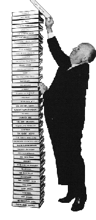

|
|

La filmographie complète (de 1922 à 1980)
Cette filmographie décrit les 63 films réalisés (ou co-réalisés) par
Alfred Hitchcock entre
1922 (Number thirteen, son premier film,
inachevé) et 1980 (The short night, le
dernier scénario sur lequel il a travaillé avant sa
mort, le 29 avril 1980). Dans toute sa carrière, Hitchcock réalisera
en fait 53 long métrages.
Hitchcock n'a bien entendu pas réalisé que des chef-d'oeuvres et
les informations
disponibles suivant les films sont inégales en quantité et également en
qualité. Les films sur lesquels Hitchcock était assistant réalisateur (entre
1923 et 1925) sont cités en italique.
La carrière d'Hitchcock est divisée en 2 parties :
la période anglaise
(jusqu'en 1939) et la
période américaine (à partir de 1940).
La période anglaise
Number thirteen (1922)
Woman to woman (1923)
The white shadow (1923),  L'ombre blanche L'ombre blanche
The passionate adventure (1924), Abnégation
The blackguard (1925), Le voyou
The prude's fall (1923)
The pleasure garden (1925), Le jardin du plaisir
The mountain eagle (1926)
The lodger (1926), Les cheveux d'or
Downhill (1927)
Easy virtue (1927)
The ring (1927), Le masque de cuir
The farmer's wife (1928), Laquelle des trois ?
Champagne (1928), A l'américaine
The manxman (1929)
Blackmail (1929), Chantage
Juno and the Paycock (1929)
Murder (1930), Meurtre
The skin game (1931)
Rich and strang (1932), A l'est de Shangai
Number seventeen (1932), Numéro dix-sept
Wlatzes from Vienna (1934), Le chant du Danube
The man who knew too much (1934), L'homme qui en savait trop - première version
The thirty-nine steps (1935), Les trente-neuf marches
The secret agent (1936), Quatre de l'espionnage
Sabotage (1936), Agent secret
Young and innocent (1937), Jeune et innocent
The lady vanishes (1938), Une femme disparaît
Jamaica Inn (1939), La taverne de la Jamaïque
La période américaine
Rebecca (1940)
Foreign correspondent (1940), Correspondant 17
Mr. and Mrs. Smith (1941), Joies matrimoniales
Suspicion (1941), Soupçons
Saboteur (1942), Cinquième colonne
Shadow of a doubt (1943), L'ombre d'un doute
Lifeboat (1943)
Bon voyage (1944), court métrage
Aventure malgache (1944), court métrage
Spellbound (1945), La maison du Docteur Edwardes
Notorious (1946), Les enchaînés
The Paradine case (1947), Le procès Paradine
Rope (1948), La corde
Under Capricorn (1949), Les amants du Capricorne
Stage fright (1950), Le grand alibi
Strangers on a train (1951), L'inconnu du Nord-Express
I confess (1952), La loi du silence
Dial M for murder (1954), Le crime était presque parfait
Rear window (1954), Fenêtre sur cour
To catch a thief (1955), La main au collet
Trouble with Harry (1956), Mais qui a tué Harry ?
The man who knew too much (1956), L'homme qui en savait trop - deuxième version
The wrong man (1957), Le faux coupable
Vertigo (1958), Sueurs froides
North by Northwest (1959), La mort aux trousses
Psycho (1960), Psychose
The birds (1963), Les oiseaux
Marnie (1964), Pas de printemps pour Marnie
Torn curtain (1966), Le rideau déchiré
Topaz (1969), L'étau
Frenzy (1972)
Family plot (1976), Complot de famille
The short night (1980) - inachevé
|